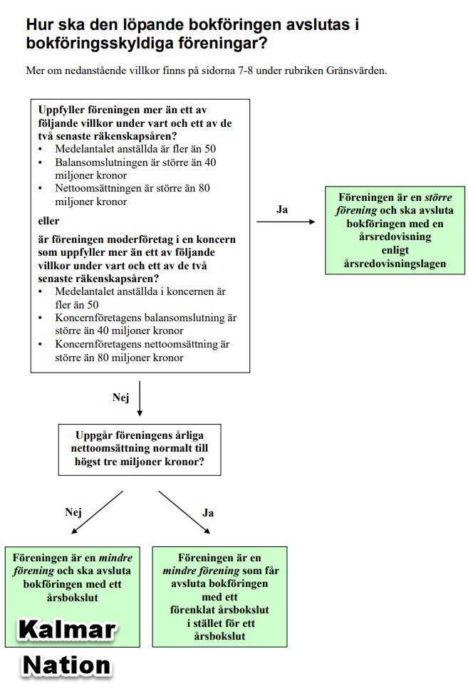
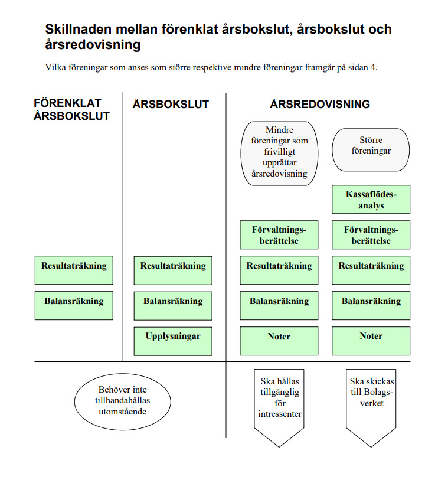

1. Vad är revision?
Tänk dig att en förening har en kassör som sköter alla pengar under ett år. Styrelsen och medlemmarna litar på kassören – men de kan inte kontrollera varenda kvitto och betalning på stämman. Då behövs en revisor: en person vars uppgift är att gå igenom räkenskaperna och svara på frågan:
"Stämmer det som bokföringen visar med verkligheten – och ger siffrorna en rättvisande bild av föreningens ekonomi?"
Revisorn är alltså inte föreningens fiende. Tvärtom – en bra revision stärker förtroendet och ger styrelsen, kassören och alla medlemmar trygghet i att ekonomin är rätt skött.
2. Lekmannarevisor – vad är det?
Stora företag och börsbolag är skyldiga enligt lag att anlita en auktoriserad revisor – en utbildad revisorsproffs. Mindre föreningar (ideella föreningar, studentnationer, bostadsrättsföreningar) har sällan den skyldigheten. De väljer i stället en lekmannarevisor på sin stämma.
En lekmannarevisor behöver inte vara utbildad ekonom. Men det är viktigt att förstå att uppdraget ändå är seriöst: lekmannarevisorn har ett juridiskt och moraliskt ansvar att granska på ett noggrant och oberoende sätt.
| Lekmannarevisor (liten förening) | Auktoriserad revisor (stort bolag) |
|---|---|
| Vald av föreningens medlemmar | Anlitad som proffs, reglerat i lag |
| Behöver inte ha formell utbildning | Auktoriserad efter flerårig utbildning |
| Arbetar ofta ensam | Arbetar i team med specialister |
| Granskar "rimlighetsmässigt" | Följer ISA (internationella standarder) |
| Skriver enklare revisionsberättelse | Standardiserad revisionsberättelse |
Vilken typ av bokslut ska en förening göra? BFN:s beslutsträd (nedan, sid 4) visar tre nivåer beroende på föreningens omsättning. Kalmar Nations nettoomsättning är ~4 mkr – vilket överstiger gränsen om 3 miljoner kronor. Kalmar Nation ska därför upprätta ett K2-baserat årsbokslut (BFNAR 2017:3), inte ett förenklat K1-bokslut. Föreningen är inte en "större förening" och behöver inte upprätta fullständig årsredovisning. Se även en mer utförlig förklaring av de tre nivåerna: Förenklat bokslut, årsbokslut eller årsredovisning.

Diagrammet nedan (sid 5) visar vad som ingår i varje nivå – vilka dokument och delar som krävs på K1-, K2- och K3/årsredovisningsnivå:

3. Vad granskas – steg för steg?
Här är de viktigaste kontrollerna som görs i en granskning:
-
Bankavstämning
Bankens eget kontoutdrag jämförs med vad bokföringen visar för banksaldot. De ska stämma exakt. Om de inte gör det – varför inte? -
Resultat = Förändring av eget kapital
Om föreningen gick med överskott på 100 000 kr ska föreningens egna kapital ha ökat med exakt 100 000 kr. Stämmer inte detta är det ett varningstecken på bokföringsfel eller felaktiga poster. -
Kontinuitetskontroll (UB = IB nästa år)
Vad bokföringen visar att föreningen ägde den 31 december ska vara exakt detsamma som startpunkten 1 januari nästa år. Annars kan siffror ha ändrats utan spårbarhet. -
Stickprov på verifikationer Verifikationslista
Revisorn väljer slumpmässigt ett antal bokföringsverifikationer och kontrollerar att kvitto eller faktura stämmer med det som bokförts.
Startpunkten är verifikationslistan – en exporterad förteckning ur bokföringssystemet (Visma eEkonomi) med alla bokförda händelser under hela året: verifikationsnummer, serie (A, B, K, M, Z...), datum, belopp och konto. Det är inte en pärm med papper – det är en digital rapport som ekonomiansvarig exporterar på ett par minuter (Rapporter → Grundbok → Exportera som Excel).
Olika serie = olika typ av underlag. Serie A brukar vara leverantörsfakturor (t.ex. dryckesleverantörer), serie K kundfakturor, serie M manuella korrigeringar och serie Z kassaregister (Zettle). Revisorn fokuserar stickprovet på de serier som bär störst ekonomisk risk. -
Jämförelseanalys (år för år)
Intäkter och kostnader jämförs med föregående år. Ökade något dramatiskt – och i så fall varför? Systematiska underskott år efter år kan tyda på strukturella problem. -
Fordringar – gamla obetalda kundfakturor Verifikationslista
En fordran uppstår när föreningen skickat en kundfaktura (vanligen serie K i bokföringssystemet) men ännu inte fått betalt. Fakturan syns som en tillgång i balansräkningen – men om pengarna aldrig kommer in är det i realiteten en förlust. Revisorn begär kundreskontra och kontrollerar hur gamla fordringarna är: fakturor äldre än 6 månader bör diskuteras med ekonomiansvarig och eventuellt skrivas av.▶ Metod: matcha K-serien mot I-serien för att hitta äldre fordringar
Vanligt misstag: Det räcker inte att konstatera att alla årets K-fakturor är betalda. Konto 1510 (kundfordringar) innehåller också fordringar från tidigare år – representerade av kontots ingående balans (IB). Om revisorn bara jämför årets K-fakturor mot årets I-betalningar kan slutsatsen felaktigt bli "inga gamla obetalda fordringar".
Matchningsnyckeln är fakturanumret. I-seriens beskrivningsfält innehåller fakturanumret inom parentes, t.ex. "Inbetalning Moll Wendén (730)". Koppla varje I-post till sin K-faktura via detta nummer. K-fakturor utan matchande I-post är obetalda.
Identifiera betalningar av äldre fakturor: I-poster med ett fakturanummer lägre än årets första K-faktura är betalningar av fordringar från föregående år (eller äldre). Dra av dessa från IB kto 1510 för att beräkna vad som kvarstår från tidigare år.
Kontrollformel:
UB kto 1510 = (IB − betalningar av äldre fakturor) + obetalda årets fakturor
Om beräknat UB stämmer mot balansräkningens UB med differens 0,00 kr är matchningen fullständig.Kvarstående äldre fordringar (IB minus äldre inbetalningar) är per definition minst 12 månader gamla vid bokslutsdag och är den egentliga riskposten. Fråga ekonomiansvarig: vad avser dessa? Förväntas betalning, eller bör de skrivas av?
-
Bedrägerikontroll (med sunt förnuft) Verifikationslista
Finns transaktioner utan underlag? Dubbla utbetalningar? Ovanliga uttag? Revisorn söker igenom hela verifikationslistan efter varningssignaler: runda belopp utan faktura, hopp i nummerserierna (saknade verifikationer), betalningar till ovanliga mottagare. Revisorn ska ha ögonen öppna – inte för att misstänka alla, utan för att skydda föreningen och dess förtroendevalda.
4. Viktiga begrepp – förklarat på klartext
5. Vad ska revisorn tänka extra på i en liten förening?
En liten förening har ofta inte ett team av ekonomiproffs – ekonomiansvarig kanske byts varje år, och rutiner kan saknas. Revisorn bör ställa sig dessa frågor:
- Har den ekonomiansvarige bytts sedan förra revisionen? (Risk: kunskap och sammanhang kan ha gått förlorat vid överlämningen.)
- Förändrades ekonomin kraftigt jämfört med förra året? (Kräver en förklaring.)
- Hanterar en enda person hela ekonomiflödet? (Ökad risk för misstag.)
- Är bokföringssystemet konsekvent och välstrukturerat?
- Finns gamla fordringar som troligen aldrig betalas?
Den tekniska instruktionen som styr hur AI-assistenten ska agera som revisor finns i CLAUDE.md. Den filen är skriven för AI-modellen (mer teknisk och detaljerad) och inte i första hand avsedd som lättläst text för icke-ekonomer.